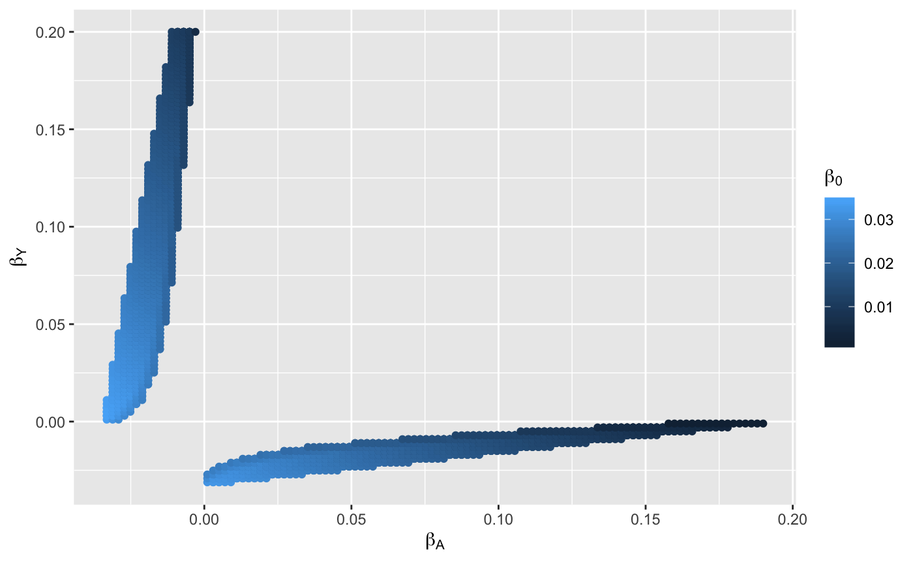

Following https://osf.io/vrcuf/, can infer the biased OR for a binary exposure (\(A\)) on a binary outcome (\(Y\)) when both of the traits influence the probability of being present in the sample (\(S\))
Assume that being present in the sample is simply:
\[ \mathbb{P}(S = 1 | A,Y) = \beta_0 + \beta_A A + \beta_Y Y + \beta_{AY} AY \]
where \(A = {0,1}\) and \(Y = {0,1}\). The expected odds ratio under this scenario is then:
\[ \mathbb{E}\left[\widehat{\operatorname{OR}}_{S=1}\right] = \frac{\beta_0(\beta_0 + \beta_A + \beta_Y + \beta_{AY})}{(\beta_0 + \beta_A)(\beta_0 + \beta_Y)} \]
Suppose that we know the fraction of the population that is present in our sample (\(p_{S}\)). We are only interested in the \(\beta_*\) parameter values that give rise to a value of \(p_{S}\) that is within the bounds of expectation:
\[ p_{S} = \beta_0 + \beta_A p_A + \beta_Y p_Y + \beta_{AY} p_{AY} \]
Scenario: we find an association between \(A\) and \(Y\) in our ascertained sample. Our question is what effects must \(A\) and \(Y\) have on sample ascertainment in order to induce the observed odds ratio \(\operatorname{OR}\), assuming that the true odds ratio is 1.
Initialise a new VBB (V-structure, Binary exposure, Binary outcome) class
x <- VBB$new()
x
#> <VBB>
#> Public:
#> clone: function (deep = FALSE)
#> histogram: function (bins = 30)
#> or_calc: function (b0, ba, by, bay)
#> param: NULL
#> parameter_space: function (target_or, pS, pA, pY, pAY, b0_range, ba_range, by_range,
#> ps_calc: function (b0, ba, by, bay, pA, pY, pAY)
#> scatter: function ()
#> scatter3d: function (ticktype = "detailed", theta = 130, phi = 0, bty = "g",Example of how to calculate the odds ratio for given \(\beta_*\) parameters:
Search over a parameter space of possible values to identify whether some target odds ratio could be explained by sample ascertainment
x$parameter_space(
target_or=2,
pS=0.0275,
pA=0.15,
pY=0.1,
pAY=0,
b0_range=c(0,0.1),
ba_range=c(-0.2,0.2),
by_range=c(-0.2,0.2),
bay_range=c(0,0),
granularity=200
)
#> 8000000 parameter combinations
#> 184710 within pS_tol
#> 6770 beyond OR thresholdThe parameter values that meet the target OR due to collider bias
x$param
#> # A tibble: 6,770 x 9
#> pA pY pAY b0 ba by bay ps1 or
#> <dbl> <dbl> <dbl> <dbl> <dbl> <dbl> <dbl> <dbl> <dbl>
#> 1 0.15 0.1 0 0.0317 0.00101 -0.0312 0 0.0287 2.91
#> 2 0.15 0.1 0 0.0317 0.00302 -0.0312 0 0.0290 6.39
#> 3 0.15 0.1 0 0.0322 0.00302 -0.0312 0 0.0295 3.66
#> 4 0.15 0.1 0 0.0317 0.00503 -0.0312 0 0.0293 9.49
#> 5 0.15 0.1 0 0.0322 0.00503 -0.0312 0 0.0298 5.19
#> 6 0.15 0.1 0 0.0317 0.00704 -0.0312 0 0.0296 12.3
#> 7 0.15 0.1 0 0.0317 0.00905 -0.0312 0 0.0299 14.8
#> 8 0.15 0.1 0 0.0296 0.00101 -0.0291 0 0.0269 2.90
#> 9 0.15 0.1 0 0.0296 0.00302 -0.0291 0 0.0272 6.35
#> 10 0.15 0.1 0 0.0302 0.00302 -0.0291 0 0.0277 3.64
#> # … with 6,760 more rowsVisualise the distribution of odds ratios found across the range of parameters

Visualise the \(\beta_*\) parameter ranges that meet the target odds ratio

Or in 3D:

Can try to do this in 3D also:
plot3Drgl::plotrgl()ACE-inhibitor and COVID19 association
Here, \(A\) is ACE inhibitor use, \(Y\) is Covid-19 status, and \(S\) is presence in the first release of the COVID Symptom Tracker dataset.
Observational association of ACE-i influence on Covid-19 status gives OR \(\approx 2\). Assume 7.8% of population take ACE-i, 10% are infected with coronavirus at the time of sampling, 1.9 million of an adult population of 54 million are present in the sample (3.5%). What influences of ACE-inhibitor use and Covid-19 status would be required to induce a collider bias of \(\operatorname{OR}=2\)?
Enter parameters without interactions to reduce the paramater space for now:
x <- VBB$new()
x$parameter_space(
target_or=2.07,
pS=0.035,
pA=0.078,
pY=0.1,
pAY=0.03,
b0_range=c(0,0.1),
ba_range=c(-0.1,0.1),
by_range=c(-0.2,0.2),
bay_range=c(0,0),
granularity=200
)
#> 8000000 parameter combinations
#> 237607 within pS_tol
#> 15775 beyond OR threshold
x$scatter()
Within our sample the prevalence of ACEi use is 4.2%. In the general population it is 7.8%. This means we can narrow down the range of our simulations to only look at parameter values that would give that level of selection (reduced likelihood of selection when on ACEi).
Need to figure out what value of \(\beta_A\) could give rise to the difference in prevalences between population and sample/
set.seed(20200420)
n <- 1000000
Y <- rbinom(n, 1, 0.1)
A <- rbinom(n, 1, 0.078)
pS <- 0.03 - 0.015 * A + 0.1 * Y
S <- rbinom(n, 1, pS)
# target 4.2% in sample
# assume 7.8% in uk
dat <- dplyr::tibble(A,Y,S)
subset(dat, S==1) %>% {table(.$A)/sum(.$S)}
#>
#> 0 1
#> 0.9503764 0.0496236Likely somewhere between \(-0.1\) and \(-0.2\).
x$scatter() +
ggplot2::labs(x = expression(paste("Effect of ACE-i on inclusion probability (", beta[A],")")),
y = expression(paste("Effect of Covid-19 on inclusion probability (", beta[Y],")")),
colour = expression(paste("Baseline inc. prob. ", (beta[0])))) +
ggplot2::annotate("rect", xmin=-0.01, xmax=-0.02, ymin=-Inf, ymax=Inf, alpha=0.4)
Now that we can fix the \(\beta_A\) parameter to 0.015, we can introduce the interaction effect. Here, if somebody is a case for COVID and uses ACEi do they have a different probability of selection than just the marginal effects.
We can also ask - is our association actually more likely to be attenuated to OR=2, rather than inflated from OR=1. Let’s search the parameter space for parameter sets that give OR=0.8 and superimpose on the figure.
x <- VBB$new()
x$parameter_space(
target_or=1.95,
pS=0.035,
pA=0.078,
pY=0.1,
pAY=0.078 * 0.1,
b0_range=c(0,0.1),
ba_range=c(-0.015, -0.015),
by_range=c(-0.1,0.1),
bay_range=c(-0.1,0.1),
granularity=200
)
#> 8000000 parameter combinations
#> 240761 within pS_tol
#> 117920 beyond OR threshold
x1 <- VBB$new()
x1$parameter_space(
target_or=0.8,
pS=0.035,
pA=0.078,
pY=0.1,
pAY=0.078 * 0.1,
b0_range=c(0,0.1),
ba_range=c(-0.015, -0.015),
by_range=c(-0.1,0.1),
bay_range=c(-0.1,0.1),
granularity=200
)
#> 8000000 parameter combinations
#> 240761 within pS_tol
#> 35758 beyond OR threshold
x$param %>% ggplot2::ggplot(., aes(x = bay, y = by)) +
ggplot2::geom_point(aes(colour = b0)) +
ggplot2::labs(colour = expression(paste("Baseline inc. prob. ", (beta[0]), " OR > 2"))) +
ggplot2::scale_colour_gradient(low="white", high="blue") +
ggnewscale::new_scale_colour() +
ggplot2::geom_point(data = x1$param, aes(colour = b0)) +
ggplot2::scale_colour_gradient(low = "white", high = "red") +
ggplot2::labs(x = expression(paste("Effect of ACE-i AND Covid-19 on inclusion probability (", beta[AY],")")),
y = expression(paste("Effect of Covid-19 on inclusion probability (", beta[Y], ")")),
colour = expression(paste("Baseline inc. prob. ", (beta[0]), " OR < 0.8")))So it could go either way really, a lot of the figure is shaded in both blue and red, and we don’t know what the actual selection based on covid is. This indicates that it is really not reliable to be making claims about causality from this type of sampling.
Note that some areas of the figure have both negative and positive bias - that is because it changes with different levels of background participation (\(\beta_0\)). This parameter is particularly difficult to estimate what the likely true value is.
Simulate to check
Simulate individual level data according to the first result, where \(A\) has no influence on \(Y\). Note that using a population size of 1 million as the sample size doesn’t matter, just the proportion sampled.
Parameters:
a <- subset(x$param, ba < -0.01 & ba > -0.02 & bay == min(abs(bay)))[1,]
a
#> # A tibble: 1 x 9
#> pA pY pAY b0 ba by bay ps1 or
#> <dbl> <dbl> <dbl> <dbl> <dbl> <dbl> <dbl> <dbl> <dbl>
#> 1 0.078 0.1 0.0078 0.0266 -0.015 0.0719 0.000503 0.0327 1.95Simulate
set.seed(31415)
n <- 1000000
Y <- rbinom(n, 1, a$pY)
A <- rbinom(n, 1, a$pA)
pS <- a$b0 + a$ba * A + a$by * Y
S <- rbinom(n, 1, pS)What proportion of the population are present in the sample?
Estimate association between A and Y
Compare to expected biased association
Weighted regression to correct for bias
If a logistic regression in the complete population could be performed to estimate the effect of \(A\) and \(Y\) on \(S\) then inverse probability weighting could be achieved by
- Estimating the log odds ratios of \(A\), \(Y\) and \(A*Y\) (and the intercept) on \(S\).
- Generate the fitted values
- Convert to probabilities (e.g. using the logistic distribution)
The inverse of these probabilities are the weights to be used in logistic regression in the ascertained sample:
probs <- glm(S ~ A + Y + A:Y, family="binomial") %>% fitted.values()
table(probs)
#> probs
#> 0.0116860009957589 0.0268861156313915 0.0810912748254119
#> 70255 829350 7954
#> 0.09800845944596
#> 92441Associations in ascertained sample (biased):
Associations in total population (unbiased):
Weighted regression in ascertained sample (unbiased):
summary(glm(Y ~ A, family="binomial", subset=S==1, weight=1/probs))$coef[2] %>% exp
#> Warning in eval(family$initialize): non-integer #successes in a binomial
#> glm!
#> [1] 1.015738However, not having the complete population data available means we cannot actually estimate the effects of A and Y on S directly. If we did know those effects (on the log OR scale), then the weights are easily generated:
coef <- glm(S ~ A + Y + A:Y, family="binomial")$coef
probs2 <- model.matrix(~ A + Y + A:Y, subset=S==1) %*% coef %>% plogis
summary(glm(Y ~ A, family="binomial", subset=S==1, weight=1/probs2))$coef[2] %>% exp
#> Warning in eval(family$initialize): non-integer #successes in a binomial
#> glm!
#> [1] 1.015738Instead, we have a set of parameters that we know give rise to bias. There is a slight complication in that those parameters are in terms of risk difference, not log odds ratios. So we need to convert them:
# Define the case fraction
mu <- sum(S) / length(S)
coef2 <- c(
qlogis(a$b0),
a$ba / (mu * (1-mu)),
a$by / (mu * (1-mu)),
a$bay / (mu * (1-mu))
)
probs3 <- model.matrix(~ A + Y + A:Y, subset=S==1) %*% coef2 %>% plogis
table(probs3)
#> probs3
#> 0.0167725721021214 0.0266331658291457 0.142859740482955
#> 70255 829350 7954
#> 0.208321080367101
#> 92441
table(probs2)
#> probs2
#> 0.0116860009957589 0.0268861156313915 0.0810912748254119
#> 70255 829350 7954
#> 0.09800845944596
#> 92441
summary(glm(Y ~ A, family="binomial", subset=S==1, weight=1/probs3))$coef[2] %>% exp
#> Warning in eval(family$initialize): non-integer #successes in a binomial
#> glm!
#> [1] 1.775638
summary(glm(Y ~ A, family="binomial", subset=S==1))$coef[2] %>% exp
#> [1] 1.933545This goes some way towards attenuating the effect but it’s obviously still some way off. This is probably because the result is very sensitive to the interaction term, and we don’t seem to be capturing that well. e.g. Here is the weighting when the interaction term is included and omitted:
probs_int <- glm(S ~ A + Y + A:Y, family="binomial") %>% fitted.values()
probs_noint <- glm(S ~ A + Y, family="binomial") %>% fitted.values()
summary(glm(Y ~ A, family="binomial", subset=S==1, weight=1/probs_int))$coef[2] %>% exp
#> Warning in eval(family$initialize): non-integer #successes in a binomial
#> glm!
#> [1] 1.015738
summary(glm(Y ~ A, family="binomial", subset=S==1, weight=1/probs_noint))$coef[2] %>% exp
#> Warning in eval(family$initialize): non-integer #successes in a binomial
#> glm!
#> [1] 1.866911Omitting the interaction term, even though small, makes a big difference. Also the estimate of the interaction effect in risk difference terms is quite different from that simulated even though the other terms are still quite well estimated:
coef3 <- lm(S ~ A + Y + A:Y)$coef
coef3[1] <- qlogis(coef3[1])
coef3[2:4] <- coef3[2:4] / (mu * (1-mu))
coef3
#> (Intercept) A Y A:Y
#> -3.58889111 -0.47879527 2.24031479 -0.05408676
coef
#> (Intercept) A Y A:Y
#> -3.5888911 -0.8487177 1.3693398 0.6406576The difference in the weighted regressions is large:
probs4 <- model.matrix(~ A + Y + A:Y, subset=S==1) %*% coef3 %>% plogis
summary(glm(Y ~ A, family="binomial", subset=S==1, weight=1/probs4))$coef[2] %>% exp
#> Warning in eval(family$initialize): non-integer #successes in a binomial
#> glm!
#> [1] 1.886533
summary(glm(Y ~ A, family="binomial", subset=S==1, weight=1/probs3))$coef[2] %>% exp
#> Warning in eval(family$initialize): non-integer #successes in a binomial
#> glm!
#> [1] 1.775638
summary(glm(Y ~ A, family="binomial", subset=S==1, weight=1/probs2))$coef[2] %>% exp
#> Warning in eval(family$initialize): non-integer #successes in a binomial
#> glm!
#> [1] 1.015738